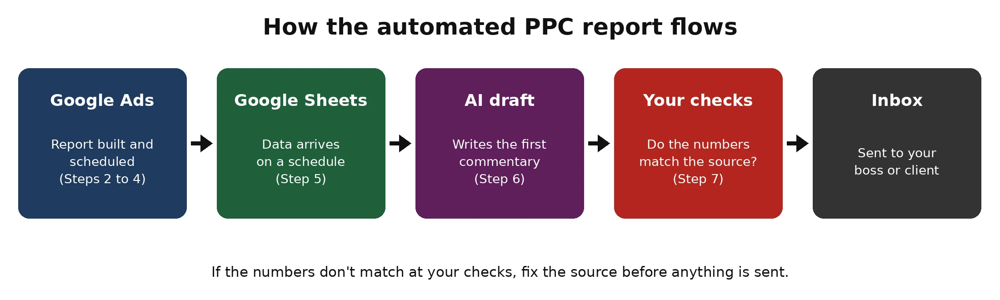

If you want to automate ppc reports with ai, the good news is that you don't need to code, and you don't need a new tool bought on a Friday afternoon. Google Ads, Google Sheets and a free dashboard connector already do most of the heavy lifting. The part that takes judgement is the checking, and that's where this guide spends its time.
I've written about the thinking behind this in my article on automating PPC reporting and still trusting the numbers. This page is the hands-on version, so you can follow it from a blank screen to a report that lands in an inbox on its own.
Who this guide is for
This is for PPC managers, in-house marketers and small agency teams who build the same weekly or monthly report over and over. By the end you'll have a scheduled Google Ads report, an AI-assisted summary in a spreadsheet, a short checking routine, and an optional live dashboard. You don't need any programming background, and I'll flag the one optional step that uses code.
What you'll need
- A Google Ads account where you can create reports and add recipients (standard access is fine).
- Google Sheets, which is free. The Gemini features need an eligible Google Workspace or Google AI plan, so check what your plan includes before you plan around them. I can't give you a price that applies to everyone, so look at your own plan.
- Optional, a free Data Studio account for the live dashboard step.
- Time depends on how many questions your report has to answer and how much checking it needs, so allow a first session to set it up and a short slot each week for the checking.

Step 1. Decide what the report must answer
Before you open anything, write down three to five questions the report has to answer. A weekly report I've relied on covers where the spend went, how performance moved, how the market looked against competitors, and what was lost and gained. Then add whatever your senior readers actually ask for, because there's no point in a report nobody reads. Put this list in the top of a blank Google Sheets tab and call the tab "Report brief". You'll use it again in step 6.
Step 2. Build a custom report in Google Ads
In Google Ads, open the Campaigns menu and choose Report editor, which is where Google's custom reports live. Create a new report, pick the table type, then add the columns that answer your step 1 questions. Include "Conversions (by conv. time)" next to Conversions. You'll need it in step 7. Name the report something you'll recognise in an inbox, such as "Weekly PPC summary".
What you should see. A table with your chosen columns and a date range at the top, showing numbers for your account. If the table is empty, widen the date range before you change anything else.
Step 3. Schedule the report
With the report open, click the email and schedule icon, which looks like a clock. Choose the account users who should receive it, pick a frequency such as daily or weekly, choose a file format such as CSV, then click Save. To change it later, click the same icon, then the pencil icon, then Save. One detail worth knowing is that Google deletes saved reports not opened in over 18 months, so don't park a quarterly report and forget it.
What you should see. The clock icon now shows your schedule, and the recipients get an email at the next run. Google's own help pages disagree on the start time, with one saying 3 AM and another saying 1 AM for individual accounts and 5 AM for manager accounts, so don't promise anyone a delivery time until you've watched one arrive.
Step 4. Schedule from any statistics table (a quicker route)
If you'd rather not use the Report editor, go to any statistics table, click the download icon above it, then choose Schedule. Set the frequency and format, tick "Save this report" if you want an editable copy, then click Schedule. Google's help page for this lists Excel CSV, TSV, PDF, XLSX, XML and Google Sheets as formats. Recipients need direct access to the account, so a client without a login won't receive it.
Step 5. Pull the data into Google Sheets automatically
Install the official Google Ads add-on for Google Sheets. Create or edit a report in the add-on and tick "Schedule this report". The sheet then refreshes by itself and sends an email.
Know the limits before you build on it. Google says it works only in English-language Sheets, only in the United States, and with one account per spreadsheet. The help page also still refers to an "Add-ons > Get add-ons" menu that may not match your current Sheets, so if you can't find it, search the Google Workspace Marketplace for the Google Ads add-on instead. If those limits rule you out, stick with the emailed CSV from step 3 and import it into Sheets by hand using File > Import.
What you should see. Rows of Ads data in a tab, with a refresh timestamp or email confirming the schedule. If you see nothing, check you've selected the right account, since it's one per spreadsheet.
Step 6. Let AI write the first draft of the commentary
You have two options in Sheets, and I'd use them differently.
Option A, Ask Gemini. Click "Ask Gemini" at the top right of the sheet, then pick a suggested prompt or type your own. Paste your step 1 questions from the "Report brief" tab and ask it to answer each one from the data. Google's Gemini in Sheets page also lists a shortcut for summarising a sheet, which is Ctrl + Alt + n on Windows and ⌘ + Ctrl + n on a Mac. Two catches matter here. Charts Gemini makes don't update when the source data changes, except for BigQuery Connected Sheets, and the chat history is lost if you reload or close the file. Copy anything you want to keep.
Option B, the AI function. In a spare column, type =AI("Write one line of commentary on this campaign", A2:F2) and fill it down. You can also reach it through Insert > Function > AI. Google's AI function page is clear that it can't see the whole spreadsheet, so you must pass the data in through the range. It only returns text and can't be undone, only regenerated. It generates the first 350 selected cells at a time, and if you hit the long-term limit you'll wait 24 hours. If you join ranges that aren't next to each other, it won't ask you to refresh when that data changes, so keep your ranges tidy.
What you should see. A short, plain-English paragraph or a column of one-liners that mention your campaigns by name. If it talks about things that aren't in your sheet, that's your cue to move straight to step 7.
Step 7. Check the numbers before anyone else sees them
This is the step that makes the whole thing trustworthy. Google itself warns that Gemini in Sheets may give inaccurate information, so treat every AI sentence as a draft.
- Ask for an independent audit. In a fresh chat, or a second tool, paste the data and the commentary and ask it to find any statement the data doesn't support.
- Ask for citations. Tell the AI to give the exact rows or formulas behind every figure. In Sheets, open "Analysis steps" and use "Show code" to see the calculation, and "Export to Docs" if you want a record.
- Check it yourself. Open the spreadsheet, use a calculator on the headline numbers, and click every link.
Then check the numbers against Google Ads. Google explains that Ads assigns a conversion to the date of the ad interaction, while other tools usually use the date of the conversion. That's why you added "Conversions (by conv. time)" in step 2. Conversion data can take time to settle too. Allow 24 to 48 hours for Analytics and Ads data to sync, up to 7 days after major changes or account linking, and conversions can be reported up to 90 days after the click.
If your totals still differ from Analytics, the same page lists the usual suspects. Secondary conversion actions only appear in "All conversions", cross-device conversions are modelled, view-through conversions aren't in the Conversions column by default, and invalid conversions can be removed later so totals can drop slightly. Changing the attribution model changes the numbers as well.
What you should see. Your headline figures in the AI summary match the Google Ads report to the last digit, or you can name the reason they don't. If you can't explain a gap, don't send the report.
Step 8. Optional, build a live dashboard
In Data Studio, which Google's current documentation uses instead of the older Looker Studio name, follow Google's Google Ads connector steps. Click Create > Data Source > Google Ads, then Authorize, choose the account, select Overall Account Fields, click Connect, then Create Report. One data source covers one Ads account, or up to 50 sub-accounts under a manager account, and viewers need access to the manager account as well as the sub-accounts.
Pick your credential option carefully. The choices are Owner's, Viewer's or Service account, and they decide whose permissions the viewers get.
Dashboards can quietly differ from the Ads interface, so watch for these.
- Campaigns and ad groups with zero impressions don't appear.
- Creative asset charts that use Clicks or Impressions can be wrong unless you add the Ad Type and Asset ID dimensions.
- Auction Insights fields were removed, for new data sources on 24th August 2024 and existing ones on 23rd September 2024.
- The Affiliate location and Store location fields were deprecated on 4th May 2026 and now return errors. Use the Asset location fields instead.
Step 9. Optional, automate with a Google Ads script
If you're comfortable pasting code, go to the Tools menu, then Bulk actions, then Scripts, or search "Scripts" in the Ads search bar. Click the + button, choose "New script", then click Authorize, Preview and Run. Google's scripts guide says scripts can run hourly, daily, weekly, monthly or on demand, with a 30-minute timeout for a single-account run. Manager scripts using executeInParallel with a callback get up to 60 minutes and up to 50 accounts in parallel. Each user can have 250 authorised scripts. An AI assistant can draft the code, but run Preview first and check what it does, exactly as you'd check a report.
If it goes wrong
- The scheduled email never arrives. The recipient probably doesn't have direct access to the account. Add them as an account user, then reopen the clock icon and save the schedule again.
- The Ads add-on won't appear or won't refresh. It works only in English-language Sheets, only in the United States, and with one account per spreadsheet. Check all three, and fall back to the emailed CSV if you can't meet them.
- The AI function says you've hit a limit. Wait 24 hours, or work in batches under the 350-cell limit.
- Gemini's chart is out of date. Charts it makes don't update when the source data changes. Rebuild it, or use a normal Sheets chart connected to your data range.
- Gemini's chat has vanished. The history is lost when you reload or close the file. Copy useful answers into a notes tab as you go.
- A dashboard campaign is missing. Zero-impression campaigns and ad groups don't show in the connector. Compare against the Ads table before you assume something broke.
- A location field shows an error. Replace the deprecated Affiliate or Store location fields with the Asset location fields.
- Conversions don't match Analytics. Add "Conversions (by conv. time)", wait for the data to settle, and check the secondary conversion and attribution points in step 7.
Stuck? Copy this prompt into an AI assistant
You're a PPC manager helping me check a weekly Google Ads report.
Goal: confirm every number in my draft commentary matches the data.
Constraints: use only the data I paste below, don't guess, and say "not in the data" if something is missing.
Here is my exported Google Ads data: [paste rows here]
Here is my draft commentary: [paste text here]
Task: list every statement in the commentary, quote the exact rows or formulas that support it, and flag any statement the data doesn't support.
Also tell me whether I should be using Conversions (by conv. time) instead of Conversions for any comparison.
Format: a table with three columns, statement, evidence, verdict.
Length: keep it under 300 words.Sources
- Google Ads Help, create and schedule custom reports
- Google Ads Help, schedule reports from a statistics table
- Google Ads Help, the Google Ads add-on for Google Sheets
- Google Ads scripts, getting started
- Google Docs Editors Help, Gemini in Google Sheets
- Google Docs Editors Help, the AI function in Sheets
- Google Cloud documentation, connect Data Studio to Google Ads
- Google Ads Help, why Ads and Analytics numbers differ